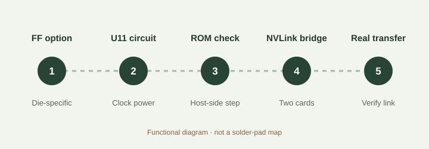

01 / 12 · Before changes
Identify the card
Use the Ubuntu computer with the CMP 170HX in PCIe and the Pico on USB. Record the card label and any known previous work. Capture its full PCI address, subsystem ID, driver-visible memory and firmware version.

lspci -Dnn | grep -i nvidia
nvidia-smi --query-gpu=pci.bus_id,uuid,name,memory.total,vbios_version --format=csvlspci shows a full address such as 0000:1a:00.0. nvidia-smi reports current driver-visible capacity and UUID if the driver is working. Save the BDF-to-UUID association before unbinding the driver. Use your actual address in later commands.
A stock-like reading is a baseline, not proof that the card has never been glitched or modified. An earlier temporary glitch may leave no obvious driver-visible trace.
02 / 12 · Fuse snapshot
Read the pre-campaign baseline
Start from your gpuglitch checkout on the GPU host. If you do not have it yet, clone it first:
git clone https://github.com/pierce403/gpuglitch.git "$HOME/gpuglitch"
cd "$HOME/gpuglitch"Clone and install pico-ga100vfi on that same host. Save the checkout path for later commands. Its baseline command reads shadow fuse registers over PCIe BAR0. The upstream workflow requires the NVIDIA driver unloaded for direct BAR0 access.
GPUGLITCH_DIR=$(git rev-parse --show-toplevel)
printf 'GPUGLITCH_DIR=%s\n' "$GPUGLITCH_DIR"
git clone https://github.com/dalzyu/pico-ga100vfi.git "$HOME/pico-ga100vfi"
cd "$HOME/pico-ga100vfi"
git checkout e1ebd972f28ebd621c483a6c8d9f0ab69b3ba73c
python3 -m venv .venv
.venv/bin/python -m pip install -e host/
GPU_BDF=0000:1a:00.0 # replace with your card's PCI address
sudo .venv/bin/python -m ga100vfi baseline --bdf "$GPU_BDF"
sudo .venv/bin/python - "$GPU_BDF" <<'PY'
import sys
from ga100vfi.bar0 import Bar0
with Bar0(sys.argv[1]) as bar:
print(f"DSOV={bar.rd32(0x00820084)} CRC=0x{bar.rd32(0x00820070):02x}")
PYbaseline prints a JSON object of named shadow fuse values. On a normal locked boot, the second read should show DSOV=1 and a valid fuse CRC (CRC=0x55). DSOV=0 means this boot is already in an unlocked state, so investigate before a campaign. GPU config space unreachable (0xffffffff) means the card is not readable through this path. Save both outputs alongside the card's physical label.
Compare with the card's known history and later results. These reads describe its current state. They cannot prove that a prior temporary glitch never occurred or authenticate a factory-original card. Upstream host usage
Capture and review FF evidence before the campaign
The separate experimental GA100 FF toolkit needs a normal, locked 10de:20c2 boot, the driver already unbound, PCI memory decoding enabled, and BAR0 access. Check those host conditions before capture. Save the GPU's BDF and UUID association while the driver is still loaded; enter that UUID at the prompt below when known. The Pico baseline output is not a substitute for two complete physical-row passes. This toolkit does not claim support for the 2082 variant.
git clone https://github.com/kprinssu/ga100-ff-tools.git "$HOME/ga100-ff-tools"
git -C "$HOME/ga100-ff-tools" checkout 04573c9dbf82997fb481f26769ec58dc625d8318
git -C "$HOME/ga100-ff-tools" rev-parse HEAD
git -C "$HOME/ga100-ff-tools" status --shortRequire the exact commit shown above and no status output before running its capture script. Use a fresh private directory. Enter the driver-observed UUID saved for this BDF. You can leave it blank for an exploratory capture, but the later post-boot verifier requires matching UUIDs in both captures and will not establish FF replay without one; stop before permanent programming on this documented path. The optional flag is passed only when a UUID was provided.
RUN_DIR=$(mktemp -d "$HOME/ga100-ff-run.XXXXXXXX")
printf 'RUN_DIR=%s\n' "$RUN_DIR"
read -r -p "Saved GPU UUID for $GPU_BDF (blank if unavailable): " GPU_UUID
CAPTURE_UUID_ARGS=()
if [ -n "$GPU_UUID" ]; then CAPTURE_UUID_ARGS=(--gpu-uuid "$GPU_BDF=$GPU_UUID"); fi
sudo python3 "$HOME/ga100-ff-tools/capture.py3" \
--bdf "$GPU_BDF" --raw "${CAPTURE_UUID_ARGS[@]}" \
--output "$RUN_DIR/card-raw.json"Expect a successful exit, two matching passes over all 512 rows, repeated option/defect values and an observed IFF boundary. Keep the printed RUN_DIR path for later commands. If the capture fails, preserve its partial file and stop; use a new directory for another attempt. The raw capture issues address and read commands, but no programming command. After a successful capture, transfer file ownership for offline planning:
sudo chown "$USER" "$RUN_DIR/card-raw.json"Return to the gpuglitch checkout, restoring GPUGLITCH_DIR and RUN_DIR from their printed paths if this is a new shell. Install this checkout's current CLI, then generate a memory-only plan. Check its exit status and inspect its JSON before running simulation. The upstream default would also select compute and an experimental PCIe pair.
cd "$GPUGLITCH_DIR"
python3 -m venv .venv
.venv/bin/python -m pip install ..venv/bin/ga100ctl memory-ff plan \
--source "$HOME/ga100-ff-tools" --baseline "$RUN_DIR/card-raw.json" \
--output "$RUN_DIR/card-memory-plan.json"Require logical-plan-complete, nonempty records, matching input hashes, defect targets that preserve reported defects, and blank rows before the observed IFF boundary. Inspect every proposed chain/block value and 32-bit record. An incomplete plan is a stop condition. Keep the full plan_id for the later human review.
.venv/bin/ga100ctl memory-ff simulate \
--source "$HOME/ga100-ff-tools" --baseline "$RUN_DIR/card-raw.json" \
--plan "$RUN_DIR/card-memory-plan.json" \
--output "$RUN_DIR/card-memory-simulation.json"Require successful logical replay against the same capture and plan. Inspect its expected option changes, shared rows and unresolved limits. This does not test a memory stack or an electrical burn setup. Keep all three files private and unchanged until after the operation. Planner documentation
Human offline review. Before the campaign, the operator can run the upstream burner without a BDF to regenerate and replay the exact plan. This form opens no hardware and prints the full plan_id. Inspect the card identity, hashes, defect masks, each proposed chain/block value, blank row and encoded word. An incomplete or mismatched review is a stop condition. Agents working from the FF planning skill stop before invoking the burner.
python3 "$HOME/ga100-ff-tools/ffburn.py3" \
--baseline "$RUN_DIR/card-raw.json" \
--plan "$RUN_DIR/card-memory-plan.json"03 / 12 · Firmware build
Build pwmvid.uf2
Install the ARM compiler, CMake and Ninja, then fetch Pico SDK 2.2.0. Return to the upstream Pico checkout first. Compare package names with the upstream build guide if your Linux distribution differs.
cd "$HOME/pico-ga100vfi"
sudo apt install git cmake ninja-build gcc-arm-none-eabi libnewlib-arm-none-eabi libstdc++-arm-none-eabi-dev
git clone --branch 2.2.0 --depth 1 https://github.com/raspberrypi/pico-sdk.git ../pico-sdk
git -C ../pico-sdk submodule update --init --recursive
export PICO_SDK_PATH="$PWD/../pico-sdk"
cmake -S firmware -B build-pico2w -DPICO_BOARD=pico2_w -DBOARD_RP2350A=ON -G Ninja
ninja -C build-pico2wboard family = BOARD_RP2350A, normal build (stock clocks, no ADC), and build-pico2w/pwmvid.uf2.
Raspberry Pi's official Pico 2 W board definition selects RP2350A. The pinned upstream README defaults to RP2350B for Pico 2 W, so the explicit family flag above matches our verified board. Board-family evidence
04 / 12 · Pico flash
Flash and check the Pico
Keep the Pico disconnected from the GPU. Unplug it from USB. Hold BOOTSEL while reconnecting USB and release it when the RP2350 volume appears. Copy the upstream image to the actual mount path on your host.
cp build-pico2w/pwmvid.uf2 /run/media/$USER/RP2350/The RP2350 drive disappears and the same Pico reappears as a USB CDC serial device, commonly /dev/ttyACM0.
List the serial ports, then use the Pico's port in the read-only v check. This verifies the firmware without a GPU connection.
.venv/bin/python -m serial.tools.list_ports -v
.venv/bin/python - <<'PY'
import serial
with serial.Serial('/dev/ttyACM0', 115200, timeout=2) as pico:
pico.write(b'v')
print(pico.readline().decode().strip())
PYclk=150 MHz last reset: power-on / external resetThe normal upstream build reports the clock and reset reason. Other reset reasons can appear. Change /dev/ttyACM0 in the command if your Pico uses another port. Move to soldering only after the Pico responds with a clock and reset reason. Protocol reference
05 / 12 · Physical connections
Wire the Pico and GPU
After the USB firmware check passes, disconnect power from the host and GPU before soldering. Match the pictured PCB layout before using its marked solder pads. Attach Pico GP0 to GPU I2CC_SDA, GP1 to I2CC_SCL, GP22 directly to PEX_RST_BUF*, and GND to a verified GPU ground point. The source photo does not name a particular ground pad. Leave Pico 3V3 and VBUS disconnected from the GPU.


Insulate and strain-relieve the wires. Check continuity to the intended nets and for adjacent-pad shorts before powering up.
06 / 12 · Voltage glitch
Tune and run campaign
With the Pico wired to the card, the host sends commands over USB serial and checks the GPU through PCIe after each attempt. The Pico uses I²C/PMBus and the PEX_RST release edge to time a shallow three-pulse NVVDD dip.
Check the Pico's USB connection
From the upstream checkout, use the Pico port identified in Flash and check. Replace /dev/ttyACM0 below if your port differs.
cd "$HOME/pico-ga100vfi"
.venv/bin/python - <<'PY'
from ga100vfi.glitch import Card
with Card("/dev/ttyACM0") as pico:
reply = pico.status()
for line in reply.splitlines():
if line.startswith("clk=") and "last reset:" in line:
print(line)
break
else:
raise SystemExit("No Pico firmware status received on this port.")
PYExpected reply clk=150 MHz last reset: power-on / external reset. The reset reason can vary. This confirms the host can talk to the firmware over USB. The same reply is possible with every GPU wire disconnected. With both boards unpowered and USB unplugged, use a meter to check continuity and adjacent-pad shorts before powering the assembly.
Run from the pico-ga100vfi checkout with this card's BDF. A unique output file and profile path tie the verdict to this campaign instead of an older attempt.
cd "$HOME/pico-ga100vfi"
GPU_BDF=0000:1a:00.0 # replace with this card's address
CAMPAIGN_OUTPUT=$(mktemp "$HOME/ga100-campaign.XXXXXXXX.log")
CAMPAIGN_PROFILE=$(mktemp "$HOME/ga100-profile.XXXXXXXX.jsonl")
printf 'CAMPAIGN_OUTPUT=%s\nCAMPAIGN_PROFILE=%s\n' "$CAMPAIGN_OUTPUT" "$CAMPAIGN_PROFILE"
set -o pipefail
sudo .venv/bin/python -m ga100vfi campaign --bdf "$GPU_BDF" --adaptive \
--log "$CAMPAIGN_PROFILE" 2>&1 | tee "$CAMPAIGN_OUTPUT"Start with the command as written and inspect its outcomes before changing the waveform. --adaptive changes only the dip voltage between attempts. All timing and pulse-shape flags stay at the campaign defaults unless you set them explicitly. Lower --v-dip means a deeper dip. With --adaptive, a supplied --v-dip is ignored.
| Knob | Campaign default | What it controls |
|---|---|---|
--v-dip | 354 mV | Dip target in fixed mode. Lower voltage gives a stronger glitch. |
--adaptive, --min-v, --max-v | Off; 300–380 mV range | Adaptive mode chooses a dip target per attempt. The first attempts may use any code in that range, including the 300 mV floor. |
--t-dip, --delay | −60 µs; 117 µs | Place the pulse train relative to PEX_RST release. Delay advances writes to compensate for rail response. |
--pulses, --pw, --gap | 3; 198 µs; 150 µs | Number of dips, each dip width, and spacing. The upstream Goldilocks waveform uses three shallow pulses. |
--v-restore, --t-restore | 750 mV; −20 µs | Recovery voltage and its timing after the dip train. |
--budget, --restore-wait | 500 attempts; 0.25 s | Maximum attempts and wait for the PCIe link to return after reset. |
--port, --bdf | /dev/ttyACM0; example PCI address | Select the actual Pico serial port and GPU PCI address. These select devices, not the waveform. |
under or dsov=1: the dip was too shallow. over or a lost PCIe link: the planner treats it as too deep. hit: DSOV is 0 and CRC is valid, but another Goldilocks check failed. GOLDILOCKS: DSOV is 0, CRC is 0x55, and the other checks pass. I²C NACKs or writes_failed point to a communication problem, so inspect wiring and controller status before interpreting voltage results.
[8] v_dip=356 valid=5 lost=3 dsov=0 crc=0x55 priv=0xffffffff GOLDILOCKSThis line is illustrative. The final JSON has "goldilocks": true on success. If repeated hit results fail the other checks, changing only dip voltage may not solve it. The upstream adaptive guide explains the classifier. The waveform notes identify timing, width and gap as further board-specific knobs. Rail traces require the separate DEBUG firmware build with an ADC sense wire; the normal Pico build cannot produce them.
A Goldilocks result only unlocks software override for the current boot. This command does not program fuse records, permanently enable disabled units, or establish 80 GB of usable memory. The card's usable capacity must be measured after the separate fuse work and a full power cycle.

07 / 12 · Temporary unlock
Read the Goldilocks verdict
The campaign exits after a temporary Goldilocks boot and hands voltage control back to stock PWM-VID. Use the unique files from the command just run, restoring CAMPAIGN_OUTPUT and CAMPAIGN_PROFILE from their printed paths if you opened another shell. The profile file receives a line only when this run reached Goldilocks.
grep -F '"goldilocks": true' "$CAMPAIGN_OUTPUT"
cat "$CAMPAIGN_PROFILE"Require a successful campaign exit, "goldilocks": true in this run's final JSON, and a newly saved profile with this card's BDF. Inspect the verdict for DSOV 0, CRC 0x55 and open privilege masks. A failed run has no new profile. Success does not change usable memory by itself.
08 / 12 · Fuse controller
Arm programming in the same boot
Kate's sequence starts from a valid Goldilocks state. Issue SENSE_CTRL so the control fuse values return, including ENABLE_FUSE_PROGRAM=1, while DISABLE_SW_OVERRIDE remains 0. Enable software override, shadow OPT_SECURED_BURN_FEATURE_ENABLE to 0, and clear the relevant write and burn locks. Opening the FUSEWDATA privilege mask may require shadowing OPT_SECURE_FUSE_WDATA_WR_SECURE to 0.
The FF burner checks controller IDLE, CRC 0x55, DSOV 0, programming enable 1, secured-burn feature 0, software override 1, WDATA write-security 0, and open FUSEWDATA/FUSECTRL privilege masks. It also requires a qualified programming supply maintained for the entire operation. The Pico campaign alone does not establish all of these conditions. Neither the Pico CLI nor the FF burner has a command to perform this arming or supply setup; the later burn command will refuse an unarmed card. Burner prerequisites
09 / 12 · Permanent FF changes
Append card-specific FF records
Use the reviewed memory-only plan from step 02 and maintain the same Goldilocks programming window prepared in step 08. The raw capture, plan and simulation must belong to this card and remain unchanged. Do not combine it with another plan or copy records from another die. Set RUN_DIR to the saved absolute path if this is a new shell.
Only after the programming window in step 08 is established, the human operator runs a live non-programming preflight with a fresh journal. It writes the read address and issues CMD_READ across the full array; it does not write program data. A pass applies to that live session only. Keep unrelated GPU software and drivers away from BAR0.
GPU_BDF=0000:1a:00.0 # replace with your card's address
sudo python3 "$HOME/ga100-ff-tools/ffburn.py3" \
--baseline "$RUN_DIR/card-raw.json" \
--plan "$RUN_DIR/card-memory-plan.json" \
--bdf "$GPU_BDF" --preflight \
--journal "$RUN_DIR/card-preflight.jsonl"Permanent programming command. Return to the gpuglitch checkout and set PLAN_ID to the full value you reviewed. Restore GPUGLITCH_DIR from step 02 if this is a new shell. The wrapper checks the pinned FF toolkit checkout, the plan identity and an unused journal path, then invokes its burner through sudo. The upstream burner requires three interactive entries: BDF, full plan ID and BURN N ROWS. It rechecks the array and guards before issuing each CMD_WRITE. This is an irreversible OTP operation; never repeat a failed or uncertain burn.
cd "$GPUGLITCH_DIR"
PLAN_ID=PASTE_FULL_REVIEWED_PLAN_ID
.venv/bin/ga100ctl memory-ff burn \
--source "$HOME/ga100-ff-tools" \
--baseline "$RUN_DIR/card-raw.json" \
--plan "$RUN_DIR/card-memory-plan.json" \
--bdf "$GPU_BDF" --plan-id "$PLAN_ID" \
--journal "$RUN_DIR/card-program.jsonl" --confirm-burnThe experimental burner reports full_array_verified: true only after its same-session readback matches the planned rows. It also reports cold_boot_verified: false and working_features_verified: false. The wrapper then reports pending_cold_boot_verification with the upstream journal path. Its hardware path has synthetic tests but no published real-GPU validation. If a guard, readback or journal fails, stop and preserve the journal; a partially programmed cell must not be retried. Burner behavior and limits
A normal sudo reboot may leave the card powered. A cold card power cycle means shutting Ubuntu down and removing AC from every PSU feeding the PCIe slot and the GPU's auxiliary power connectors. The GPU can stay installed.
Full card power cycle: exact steps
After the human-run burner has finished and its journal is saved, use this sequence:
- Stop work and bring any external fuse-programming supply or rig to its safe off state using that setup's own sequence. Never interrupt an active program command. On the GPU host, run
sudo systemctl poweroff. An SSH session will disconnect; arrange physical or out-of-band access to turn the machine back on. - Once the host is off, switch off or unplug AC to every PSU feeding the motherboard PCIe slot or the GPU's auxiliary power connectors, including redundant or separate GPU supplies. De-energize independently powered Pico USB and any other attached bench sources so they cannot keep driving the card through signal wires. Never unplug the card or its PCIe power connectors while energized.
- Wait for the board and PSU to discharge according to their instructions. Dark fans or LEDs alone do not prove that every rail is off. Record how card power was removed; an SSH disconnect or changed host boot ID alone is not evidence that the GPU was unpowered.
- Restore the supplies and boot the host. Start step 10 with a fresh normal-boot raw capture before binding the NVIDIA driver, then check driver-visible capacity and tested memory.
FF changes alone do not configure the driver to address 80 GiB: stock cmpunlocker targets 64 GiB on 20c2, and Kate's more permissive FBPA_CFG geometry has no published ready-to-run 80 GiB profile in these tools. The burner also does not establish NVLink operation. Kate's floorsweeping and geometry discussion
10 / 12 · Post-boot inspection
Inspect the card after a clean boot
Complete the temporary Goldilocks and FF session before installing drivers or running CUDA tests. This step belongs after a full power cycle. The software-only cmpunlocker route below is independent and can also start from a normal locked boot.
Check FF replay after a human burn
If FF records were programmed, take a new raw capture on a clean, locked boot before binding the NVIDIA driver. The selected card must again be driver-unbound with PCI memory decoding enabled and BAR0 accessible. Enter the same driver-observed UUID saved with the baseline; a missing or different UUID prevents the automated comparison from establishing identity. Use a new private directory and the pinned capture script. If these host conditions are absent, establish them with the operator's host procedure before capturing. A fresh capture separates physical FF replay from the later driver's capacity setting.
GPU_BDF=0000:1a:00.0 # replace with the same card's address
POST_DIR=$(mktemp -d "$HOME/ga100-ff-post.XXXXXXXX")
printf 'POST_DIR=%s\n' "$POST_DIR"
read -r -p "Saved GPU UUID for $GPU_BDF (blank if unavailable): " GPU_UUID
POST_UUID_ARGS=()
if [ -n "$GPU_UUID" ]; then POST_UUID_ARGS=(--gpu-uuid "$GPU_BDF=$GPU_UUID"); fi
sudo python3 "$HOME/ga100-ff-tools/capture.py3" \
--bdf "$GPU_BDF" --raw "${POST_UUID_ARGS[@]}" \
--output "$POST_DIR/card-post.json"Check the capture's exit status and two full passes before making the file user-readable:
sudo chown "$USER" "$POST_DIR/card-post.json"From the gpuglitch checkout, compare this capture with the original and the reviewed plan:
cd "$GPUGLITCH_DIR"
.venv/bin/ga100ctl memory-ff verify \
--source "$HOME/ga100-ff-tools" \
--baseline "$RUN_DIR/card-raw.json" \
--plan "$RUN_DIR/card-memory-plan.json" \
--post "$POST_DIR/card-post.json"Require ff-replay-observed: two matching post-boot passes, planned words in their rows, unchanged unplanned rows and memory shadow options at the simulated targets. A mismatch is a stop condition. Keep both captures and the plan private. A post-boot observation alone cannot prove that card power was removed; record that step separately. Working HBM still needs a driver and a write/readback test.
Check how much memory your card can use
Once the NVIDIA driver is bound again, run this from the gpuglitch checkout with CUDA-enabled PyTorch in the project environment. Restore GPUGLITCH_DIR from step 02 if this is a new shell. The command finds the card automatically and tests the memory CUDA can currently allocate. Neither this check nor a successful Pico campaign enables additional HBM by itself.
cd "$GPUGLITCH_DIR"
.venv/bin/ga100ctl memory-checkThis is the live command’s output format with invented readings. It is not a measurement from this project’s card.
Memory check (live) passed
0000:41:00.0 passed event #2
Driver total 81920.0 MiB
Verified allocation 76800 MiB
DRAM ECC change corrected 0 / uncorrected 0
PCIe 8.0 GT/s PCIe width 16Here the driver reports 80 GiB and 75 GiB passed every write and readback pattern. The other 5 GiB was outside the test allocation. Some memory can already be in use, and the tool reserves headroom. If the driver still exposes 8 GiB, this command can test only within that range.
Run the 8 GB simulation without a GPU
Try the 8 GB example from the gpuglitch checkout. The PCI address selects one of the bundled simulated cards. This command runs without a Pico or GPU.
.venv/bin/ga100ctl --simulate memory-check --gpu 0000:41:00.0Memory check (fixture-v1) simulated
0000:41:00.0 simulated event #2
Driver total 8192 MiB
Verified allocation unavailable
DRAM ECC change corrected unknown / uncorrected unknown
PCIe 2.5 GT/s PCIe width 4
Fixture only. No memory tested.The event number depends on the local history. The 8192 MiB comes from the fixture. “Verified allocation” stays unavailable because the simulation never allocates GPU memory.
What if memory readback fails?
The test writes a different value at each word address before reading the allocation back. If two addresses refer to the same storage, the report can show a mismatch like this illustrative excerpt.
Verified allocation 0 MiB
address-pattern mismatch at chunk starting at word 262144A mismatch gives the starting index of the chunk where readback failed. Zero MiB means the allocation failed verification as a whole. The index identifies a location in the test buffer and cannot identify a defective physical HBM stack.
Disabled versus defective. A disabled partition is excluded by the card’s configuration. Whether it would work is a separate question. CUDA cannot read an excluded partition, so this scan leaves its health unknown. It does not unlock units or produce a partition-by-partition defect map. Kate’s explanation of floorsweeping
Enable the published 64 GB or 40 GB software configuration
After saving a baseline, cmpunlocker provides an independent software route: the 8 GB variant (PCI ID 10de:20c2) targets 64 GiB and the 10 GB variant (10de:2082) targets 40 GiB. This route uses patched NVIDIA modules and does not require a Pico campaign or OTP fuse programming. It does not supply Kate’s die-specific 80 GB FF change. The target is a driver configuration; verify usable bytes on your own card after a cold power cycle.
From a gpuglitch checkout on the GPU host, fetch the reviewed cmpunlocker revision and run our wrapper. It selects the single supported GPU by PCI ID, checks the checkout revision and clean state, records an event, then invokes cmpunlocker’s installer through sudo. If more than one NVIDIA GPU is visible, move the card to a dedicated host before using this command.
python3 -m venv .venv
.venv/bin/python -m pip install .
git clone https://github.com/amoghmunikote/cmpunlocker.git ../cmpunlocker
git -C ../cmpunlocker checkout 2c7e2ecd7944e791fec040d2680036beb4a9327b
.venv/bin/ga100ctl memory-enable --source ../cmpunlocker --confirmOn a successful installer exit, ga100ctl reports pending_power_cycle with an event ID and the target capacity, 65536 MiB or 40960 MiB according to PCI ID. This illustrative excerpt is for a 10de:20c2 card; it is not a measured capacity.
{
"event_id": 17,
"state": "pending_power_cycle",
"result": {
"method": "cmpunlocker",
"expected_driver_memory_mib_after_boot": 65536
}
}The wrapper skips cmpunlocker’s IOMMU, boot service and VM passthrough setup. The installer still replaces NVIDIA kernel modules, removes conflicting NVIDIA DKMS modules, and writes /etc/modprobe.d/cmp-pcie-gen2.conf; it may download matching driver sources. Review the installer before running it on a host with other workloads.
For this software route, use sudo systemctl poweroff, then switch off or unplug every AC feed to the PSU or PSUs powering the PCIe slot and GPU auxiliary connectors. Wait for discharge per the board and PSU instructions, restore power, and boot. An Ubuntu reboot alone does not establish card power removal. Run .venv/bin/ga100ctl gpu inspect and .venv/bin/ga100ctl memory-check from gpuglitch afterward. Compare the new driver total and the verified readback range with the baseline; a reported 64 or 40 GiB alone does not establish that every address works. The --profile flag in cmpunlocker’s own installer changes metadata, not the geometry selected from the PCI ID.
Two different register capture formats
Kate’s gpu0-capture is a Rust library for the Linux computer with the GPU in its PCIe slot. It reads the card through BAR0, a window into GPU registers. The Pico’s USB cable plays no part in that read. Kate published the capture library without a command-line program for starting a live capture. The FF toolkit's capture.py3 above is a separate program and JSON format; its raw baseline feeds its own planner and burner.
A capture contains named register readings and two passes over the fuse rows. Kate’s gpu0-analysis library checks the register map and whether the passes agree. Our ga100ctl capture review command uses that library to read a saved file. Kate’s register tools
Inspect the installed GPU over SSH
On the GPU host, run this from your gpuglitch checkout. The command uses Linux PCI inventory and the NVIDIA driver when available. With one NVIDIA GPU visible, it selects the card automatically.
.venv/bin/ga100ctl gpu inspectThe JSON includes the card’s PCI address (bdf), device ID and an event ID for the saved observation. Without a working driver, memory telemetry may be absent even when Linux sees the card. If other NVIDIA GPUs are visible, use gpu list and add --gpu with the 170HX’s full PCI address.
Try the Rust reviewer with a saved capture
From the gpuglitch checkout, with the CLI and Rust helper installed, run the bundled example. It works on a machine without a GPU. Installation instructions
.venv/bin/ga100ctl capture review tools/capture-review/examples/partial.json"stable": false and "relationship": "incomplete_preserve". The example stopped before collecting any readings. A successful exit means the reviewer produced a report.
For your own Kate version 4 captures, substitute your filenames. The earlier capture must be stable and match the specimen claim, PCI device ID and PCI address. The Pico tool’s baseline JSON uses a different format.
.venv/bin/ga100ctl capture review current.json --baseline earlier.jsonbaseline_match means the stable capture fingerprints agree. changed_preserve means they differ. Either result describes register observations. To measure usable HBM, run .venv/bin/ga100ctl memory-check once the GPU is running with its CUDA driver and compare driver-reported capacity with the MiB that passed readback.
11 / 12 · Optional interconnect
Plan the separate NVLink work
Clearing the die-specific OPT_NVLINK_DISABLE FF bits is only the silicon side. Kate reports that the CMP 170HX PCB omits U11, which normally supplies the bridge's reference clock circuit. Her experiment bridged two pins on that footprint on one card in a pair, then bypassed a ROM check with additional host commands. She did not publish a pin-numbered U11 solder map or those host commands.

Bridging U11 may join the two boards' 3.3 V rails through the NVLink bridge. Kate advises patching only one board in the pair when supplies differ. Validate the board revision, power arrangement, bridge and clock path before attempting this mod. A fused NVLink enable bit alone does not produce a working link.
12 / 12 · Acceptance
Verify capacity and links after a cold boot
Here a cold boot means the full card power cycle in step 09; an Ubuntu reboot alone does not count. With the desired driver configuration installed, record the reported capacity and topology. Kate's 80 GB example reports 81920 MiB, and her paired cards show NV12 in the topology output.
nvidia-smi --query-gpu=index,pci.bus_id,pci.device_id,name,memory.total --format=csv
nvidia-smi topo -m
lspci -vv -s "$GPU_BDF"A reported 81920 MiB is only the first check. Write different data across the full intended range, evict or invalidate cache, and read it back to detect aliases or defective HBM. Then run sustained real workloads and inspect ECC/errors. Check trained PCIe speed and width separately. For NVLink, verify both endpoints and a real transfer across the bridge, not only an enabled fuse or topology label.
Kate reports 64 to 80 GB on 8 GB cards depending on the specimen, and 40 to 48 GB on typical 10 GB cards. PCIe Gen4 x16 may also require a decoupling capacitor board mod. Kate's measured results